Create your Wedding Invitation Card
It’s your special day. Invite others in a more special way.
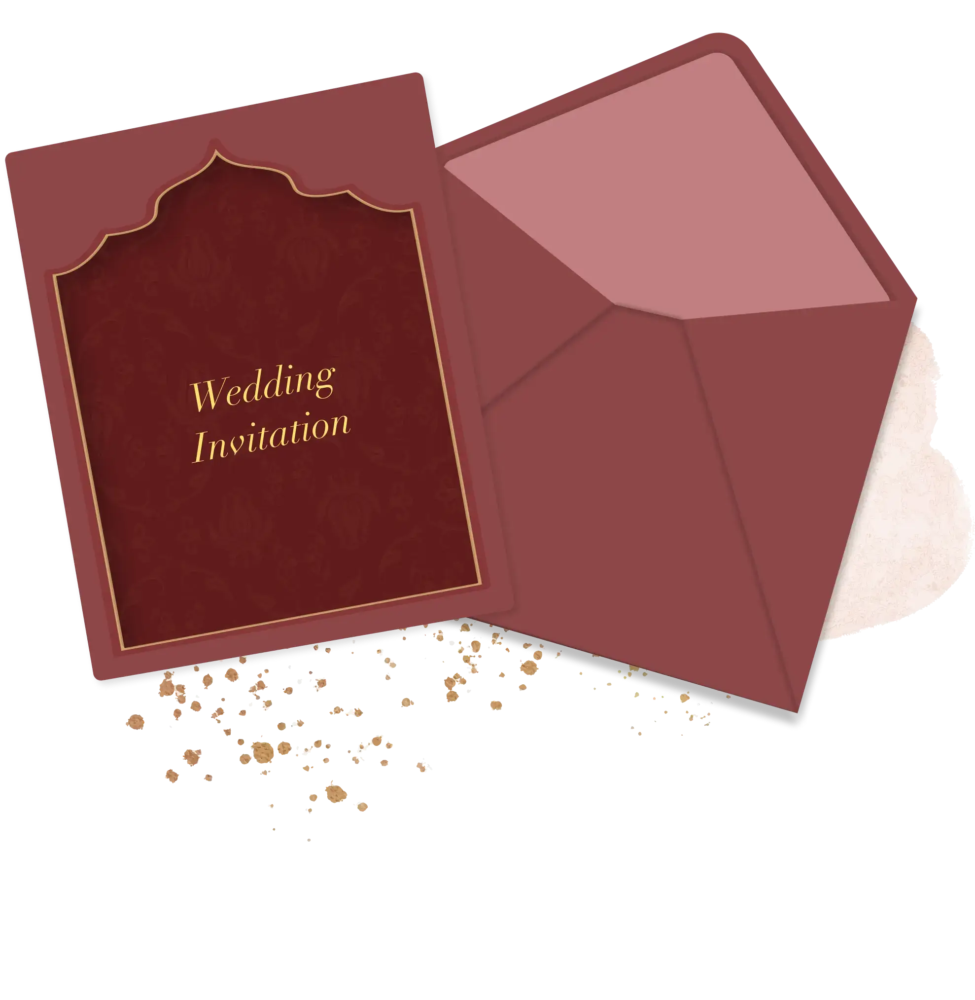
Pick your wedding card design
Choose from a range of premium designs for your wedding invitation card. Share the happy news of your wedding with loved ones.
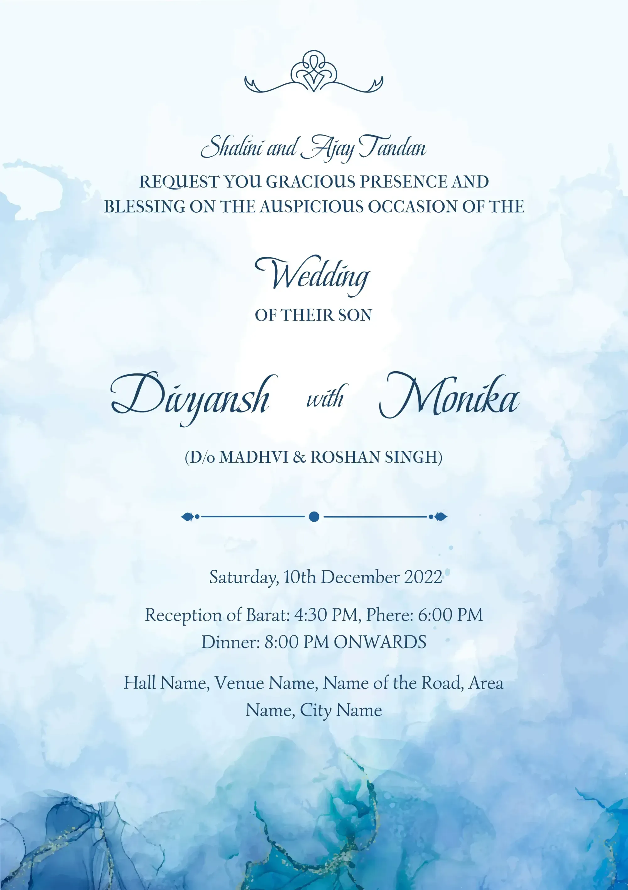
Aqua Marble
₹99 ₹299
66% OFF
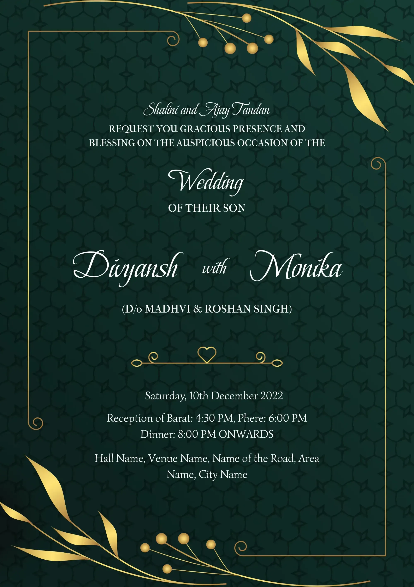
Golden Petals
₹249 ₹499
50% OFF
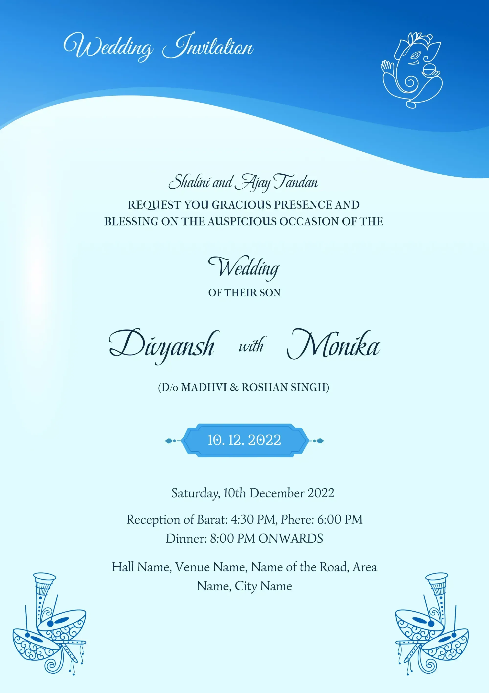
Aqua Marble
₹149 ₹399
62% OFF
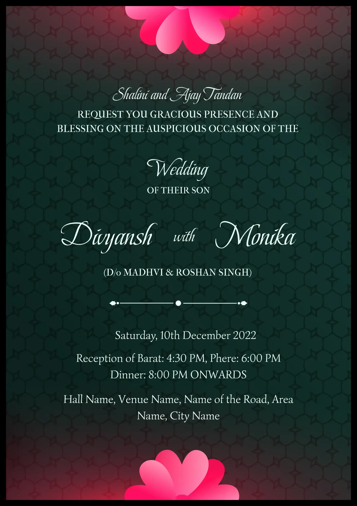
Fuchsia Floresta
₹149 ₹399
62% OFF
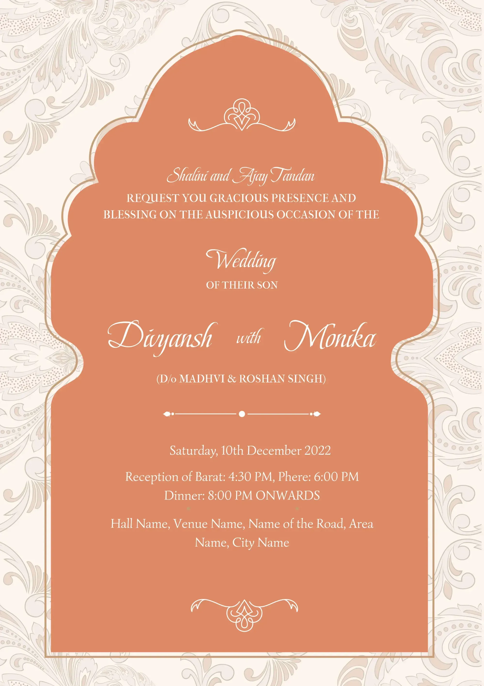
Kesariya
₹249 ₹499
50% OFF
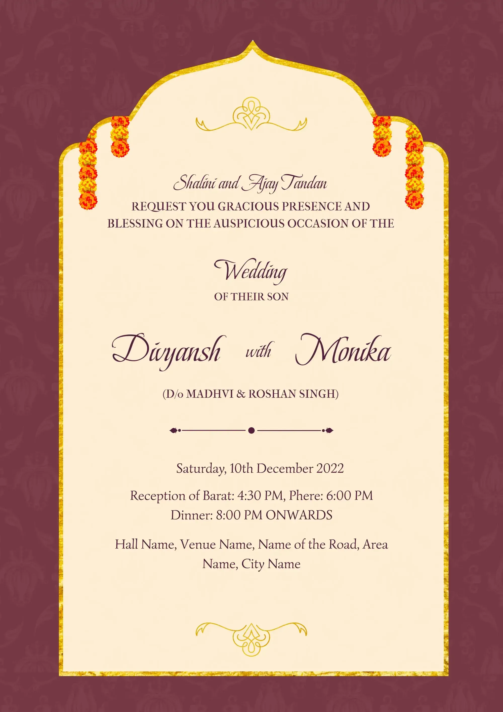
Prem Mandir
₹149 ₹399
62% OFF
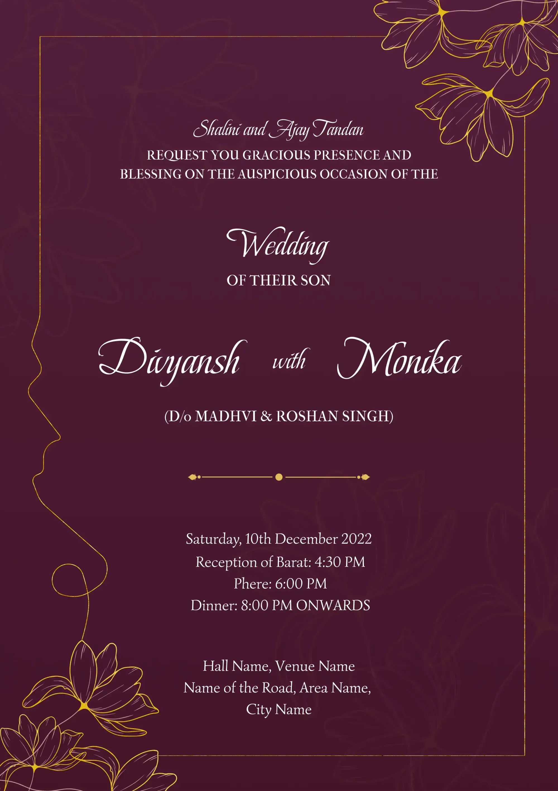
Mauve
₹149 ₹399
62% OFF
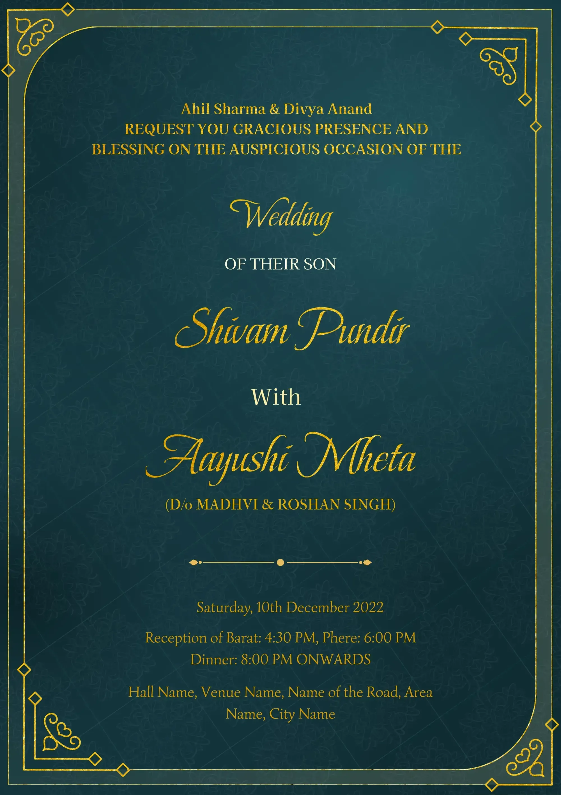
Emerald Royalty
₹149 ₹399
62% OFF
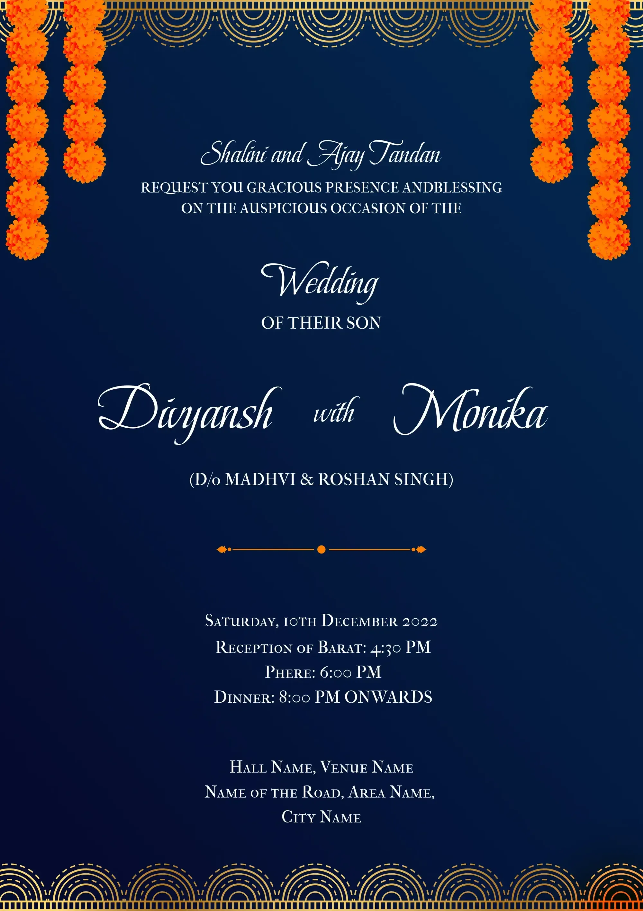
Blooming Blue
₹249 ₹499
50% OFF
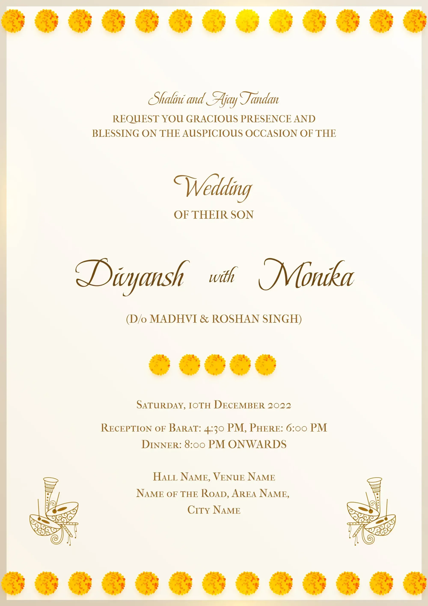
Sasuraal Genda Phool
₹149 ₹399
62% OFF
What is a Wedding Invitation Card?
You’ve found your soulmate. The date is fixed. The venue is booked. All the preparations have started. Now you want to tell your loved ones about the biggest day in your life.
So, what would be the perfect way for the same? Well, a wedding invitation card should be the first thing which must be coming to your mind. Right? We’re sure that you must have received numerous wedding cards all your life. And you must have a basic idea about an invitation card for a wedding that people usually send. If we were to define it, a wedding invitation card is simply a letter inviting your loved ones to your special day—your wedding day. And since it is your special day, the wedding invitation card design should be top-notch. No, right?
Sending a formal invitation through a wedding card has been in the culture for a long time. However, the practice of sending a wedding invitation card has seen many transformations over the years. And since the current time is dominated by technology all around us, the newest trend is to send e-wedding cards or e-wedding invites (online invitation card for wedding) on WhatsApp or email. The reason behind its popularity is the convenience it provides to people who want to send invites for their weddings. Also, the online wedding invitation card option allows people to give an extra personal touch to their invites. They can customize the same by using different templates, photos, innovative texts, etc.
How to Make a Digital Wedding Invitation Card Online?
Now that you have a basic idea about digital wedding invitation cards, you must want to know how to make the same online. In the age of the Internet, it is really easy to make a digital wedding invitation card. To make your wedding unique, making and designing your e-wedding card is the first and foremost step. When you send your marriage invitation card, you want people to feel happy seeing the news. And that’s why you should put extra effort into making a unique e-wedding invite. Let’s understand how to make a digital wedding card.
What Should a Wedding Invitation Card Include?
While figuring out the wedding invitation card for your special day, one of the major questions that you face is about the details that should go in your invitation. Well, different people like to add different details to their digital wedding cards. But while making your e-wedding card, you should remember that it should not be overloaded with information; add only the necessary details and not more than that. Simply put, your wedding invitation card tells your loved ones the who, what, when and where of your Shaadi.
Here are some of the details that you must add to your digital wedding invitation card.
What is the Ideal Time to Send a Digital Wedding Card Invitation?
Okay, now you know what a digital wedding invitation card is and the details to include in the same, here’s the most important question—when should you send your e-wedding card?
Nowadays, some people send save-the-dates (telling everyone about the wedding date) before sending the actual digital wedding card to their loved ones. If you are sending it, you should ideally send it four to six months before your wedding. Earlier, if you are planning a destination wedding people can plan accordingly.
Now let’s come to the ideal time for sending your e-wedding card online. Well, the ideal time frame to send your wedding invitation card is six to eight weeks before your marriage date. The reason behind this time frame is if you send the invite too soon, people might forget about it. If you are sending just one week before your wedding, they might have some priorly committed plans. Also, it’s just rude to send wedding invites at the last minute. So, you should make a list of the people you want to invite and send them the digital wedding card well in advance.
Also, remember that the ideal time frame changes in case you’re doing a destination wedding instead of a local wedding. So, make sure you account for all these factors before sending an invite.
Choose from Free Wedding Invitation Templates
Nowadays, you can send a marriage invitation card online. However, one thing you should remember is people always respect a physical invitation card even though there are leaps and bounds of technological advancements in this category. People still look forward to get the invitation with latest wedding card design to their hands in their house. They feel respected and loved if a person is coming to their home for invitation.
However, sending wedding invitation card through WhatsApp or Email or any other digital mode has become very popular for the last year. First, it’s convenient. Second, it is cost-efficient. And third, it’s environment-friendly also! Some people opt for both type of wedding invitation cards. They also make the physical card by choosing the wedding invitation cards template. You can find the tons of latest designs online both for physical cards and online cards. So, it’s upto you at the end
Different Types of Digital Wedding Invitation Cards
A digital wedding invitation card can be of many types in the current age. It’s one of the most special days in your life and your wedding invitation card should reflect the same. There are different types of digital wedding invitation card templates available online - single-page, multi-page, save-the-date cards, pastel, traditional, modern, floral, minimal, detail-heavy, elemental, city-based, character-based, etc.
Apart from choosing the different types, you can always try something new and creative by adding a personal touch to your e-wedding card. You can always make it the way you want. After all, it’s your special day. So, if you want a certain wedding card design or a particular wedding card format you saved on Pinterest, go for it! There are extremely low chances that you will send your wedding invitation card again in your life. So, better do it in the right way!
Frequently Asked Questions (FAQs)
How long does it take to prepare a wedding card using designs online?
With so many online wedding card maker tools available online, you can make your digital wedding card invitation in no time. Just go to one of the online tools, choose the template or theme, fill in your details and you will be able to download your e-wedding card instantly. Some platforms also give you option to share it directly on WhatsApp or Email.
How much time before should you send the e-invite?
You should send your wedding e-invite as soon as you’re done making your online wedding invitation card. The better your guests receive the card, the better it would be for them to make time in their calendar for your wedding.
Can you make an e-invite by yourself for your wedding?
Yes, sure! You can make the online wedding card totally by yourself! It’s so easy to do that.
What all can you include in an e-invite?
It totally depends on you. It can be as detailed or as simple you like. People usually incorporate details like name of the bride & groom, date & time of the wedding, venue details, RSVP option, dress code, gift preferences, etc.